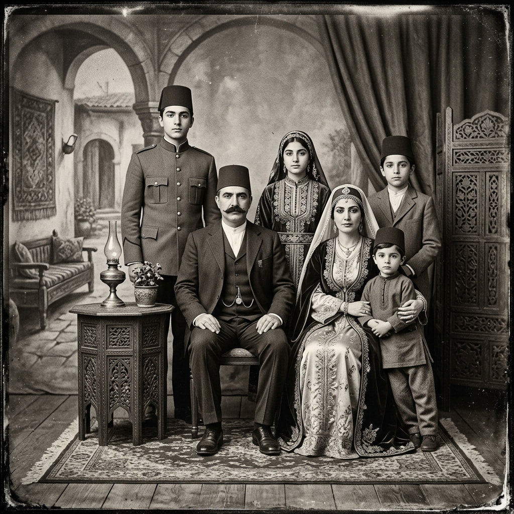

The Hidden Ireland: Reading 19th Century Parish Registers Without Speaking Irish
Pre-famine Irish parish registers are among the most valuable — and most challenging — genealogical sources available. Here's our complete field guide to navigating them.

Dr. Siobhán Brennan
Lead Genealogist · March 8, 2026 · 12 min read
All Articles

Understanding Centimorgans: What Your DNA Match Numbers Actually Mean
A 250 cM match sounds significant — but does it mean second cousin or half-great-aunt? We break down the probability tables that genealogists rely on.
Robert Muñoz · Mar 15

The 10 Most Overlooked Sources in American Genealogy Research
Everyone knows about census records. But city directories, Freedmen's Bureau records, and county histories are genealogical gold mines hiding in plain sight.
Abena Williams · Mar 10

How One Photograph Led Us Back Seven Generations to Ottoman Anatolia
A single studio portrait from 1908 became the key to unlocking a family's complete Ottoman-era history. This is that research story.
Nilufar Khalil · Mar 5
A Genealogist's Guide to the FamilySearch Catalog — Finding the Truly Hidden Collections
FamilySearch's search bar shows you 5% of what's available. Here's how to find the unindexed collections that most researchers never find.
Dr. Siobhán Brennan · Feb 28
The Great Famine's Hidden Genealogical Record: What Workhouse Registers Reveal
Irish workhouse records are often painful to read — but they contain extraordinary genealogical detail about the families who passed through them.
Cathal O'Brien · Feb 20

From Endogamy to Ethnicity Estimates: Why Ashkenazi Jewish DNA Research Is Different
High endogamy means standard DNA interpretation breaks down. Our specialists explain the techniques that actually work for this research context.
Miriam Levin · Feb 14
Heritage Dispatch
Monthly Genealogy Insight
New archive discoveries, research strategies, and extraordinary family stories — every month, free.
No spam, ever. Unsubscribe anytime.